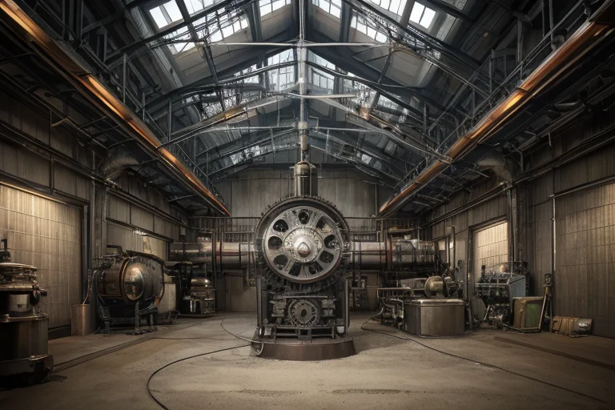
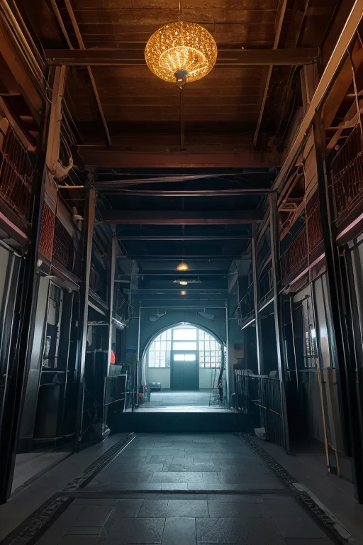
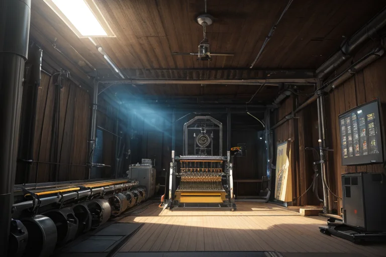
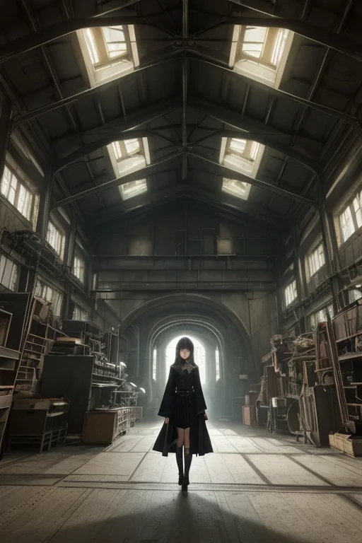
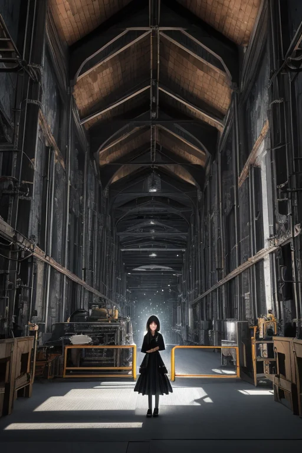

第一章 現実の愛知
あなたはまだ気づいていない。この土地にも、王がいることを。
トヨタ産業技術記念館の静かな展示室。巨大な環状織機と蒸気機関が、時を止めたように佇んでいる。かつての喧騒と熱気は、完璧な静寂に封じ込められ、ガラスケースの向こうで眠っていた。ここは王国の心臓部であり、同時に封印の場でもある。機構王アイチア・メカニカは、赤と銀の紋章を胸に、無表情で展示物を見つめる。彼の王国「アイチア・メカニカ」は、技と実利を基盤とし、あらゆるものを合理の歯車に組み込むことで、この土地の歪みを調整してきた。感情は不要な振動である。計算こそが最適解を導く。主席妖精メカリスが、名古屋の地下を流れる微細な振動を監視し、地域妖精テクノリアが工場地帯のリズムを安定させる。すべては完璧に設計された機構のように。しかし、王は知っている。この静けさの底で、何かが、ほんのわずか、目覚めかけていることを。

第二章 歪みの兆候
トヨタ産業技術記念館の静かな展示室。かつて紡績工場だった赤レンガの空間に、巨大な機械類が整然と並ぶ。メカリスは、壁に埋め込まれた銀色の均整線を点検していた。線は微かに、規則的でない脈動を伝えている。計算上、ありえない揺らぎだ。
「王。覚王山周辺の結界、応答に0.03秒の遅延が生じています。原因は特定できず」
機構王は、名古屋城の天守閣最上階から東の空を眺めていた。視界の端を流れるデータ列に、メカリスの報告が追加される。感情は不要だ。原因を特定し、修復する。ただそれだけの事象である。しかし、その「原因不明」という事実そのものが、計算式に小さな埃のような違和感を落とす。
テクノリアが工場地帯の安定を報告する。手羽先の焼ける匂いが漂う路地裏では、人々の笑い声が弾む。すべては平常通り。だが、均整線の歪みは確実に広がっていた。それは、封じられた何かが、長い眠りからまぶたをわずかに動かした、最初の兆候だった。

第三章 王の葛藤
トヨタ産業技術記念館の巨大な織機は、規則正しい音を立てて動き続けていた。その振動データをアイチアは凝視する。歪みの源は、どうやら熱田神宮の地下深く、三種の神器の一つが眠る領域と重なる。計算上、封印を一時解放し、その力を以て歪みを「再編成」するのが最適解だ。成功率87.4%。しかし、それは「機構封」という根本ルールの破綻を意味する。
「王。推奨案を実行しますか」
メカリスの声に感情の波はない。当然だ。彼らは感情を抑制するように設計された。合理が全てだ。歪みを正すことが、この土地と人を守ることだ。
だが、覚王山のモーニングを楽しむ老夫婦の会話が、妖精の報告に混じって流れてくる。「孫がな、『じいじの味噌煮込み、一番』って言うてな」。無意味なデータ。削除すべき雑音。しかし、アイチアの内部で、計算とは別の何かが、封印を解くことの「代償」を問いかけ始めていた。合理が導く最適解は、この穏やかな朝の時間を、確率の変数として切り捨ててはいないか。銀と赤の紋章が、微かに震えた。

第四章 妖精との対話
トヨタ産業技術記念館の静かな展示室。巨大な紡績機械と蒸気機関が、かつての産業革命の鼓動を無言で伝えている。メカリスは、停止した歯車の前で、淡々と語り始めた。
「機構封。それは、王が感情進化を起こした際、その膨大な感情エネルギーが『歪み』そのものを増幅する危険性への対策でした。我々は、王の感情中枢を封印し、純粋な調整機構として機能するよう設計されました」
アイチアは銀色の手を、冷たい機械の側面に触れた。ここには、合理と効率がもたらした繁栄の歴史がある。しかし、その歴史を動かしたのは、機械そのものではなく、それを作り、使う「人間」の、時に非合理な情熱だった。
「合理は、心を救うか」メカリスの声に、計算不能な逡巡が混じる。「感情を封じた合理は、災害の確率を最適化できます。しかし、確率が救わない命、計算が拾いきれない『偶然』が、この国にはあります。老夫婦の朝、孫の一言……それらは、救うべき『歪み』ではないのでしょうか」
妖精の問いは、王の内部で、封印そのものを揺るがす振動となった。

第五章 微調整と余韻
名古屋城の石垣に、銀色の均整線が一瞬、微かに走った。歪みの調整は完了した。機構王アイチア・メカニカは、自らの内部に生じた亀裂を、静かに修復していく。感情の漏出は、計算不能なリスク要因だ。メカリスの問いかけは、不要なデータとして隔離され、再び封印の機構が噛み合う。
しかし、完全には元には戻らなかった。トヨタ産業技術記念館の巨大な織機が規則正しく動く音の中に、ほんの少し、リズムの乱れが生じている。それは、計算を超えた「何か」への、予兆だった。王は知っている。この微かな乱れが、次に大きな歪みが訪れた時、確率の網からこぼれ落ちる一粒の命を、偶然という名の手で掬い上げるかもしれないと。
合理は、心を救うか。答えは出ない。王は、救えないものの存在を認識した。その認識そのものが、彼に与えられた、静かで痛みを伴う代償であった。
あなたの町にも、王がいる。